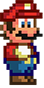

Welcome to Mario Maze
keyboard_arrow_up
keyboard_arrow_left
keyboard_arrow_right
keyboard_arrow_down
Use the arrow keys to navigate  through the
MAZE and collect all the  with the MINIMUM number of steps
with the MINIMUM number of steps
system_update
If you are using a mobile you can either swipe to move or use the keys at the bottom keyboard_arrow_left keyboard_arrow_up keyboard_arrow_down keyboard_arrow_right